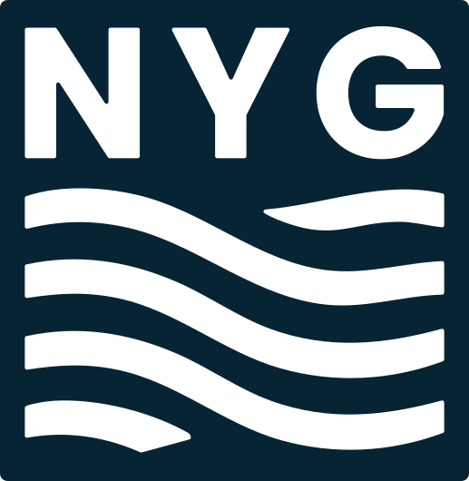
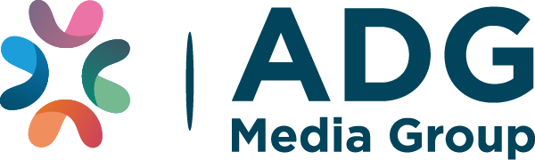
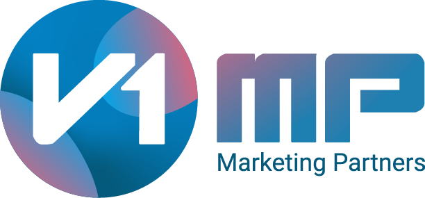
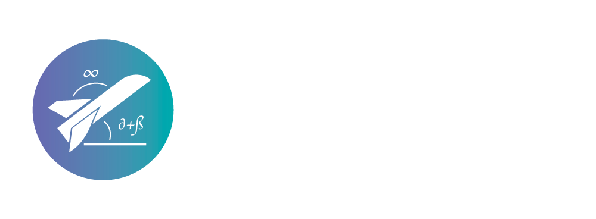

Our private equity investment portfolio focuses on innovative, high-growth companies across diverse sectors.
At NYG, we seek to partner with companies that not only have great growth potential, but are also transforming their industries. Below are the details of our private equity investments.

A leading business holding company in the advertising and marketing technology sector, offering innovative solutions for agencies and brands internationally. Its main investments are focused on automation and data intelligence.
An independent trading desk specializing in programmatic advertising automation and data-driven campaign optimization. ADGRAVITY's platform enables agencies and advertisers to automate media buying processes while maintaining full transparency and control over campaign performance. Their recent travel industry report demonstrates expertise in analyzing complex consumer behavior patterns and developing targeted strategies for multi-stage purchase journeys.
An advanced marketing attribution platform powered by neural network algorithms that analyze hundreds of user-level parameters in real-time. Neural.ONE uses artificial intelligence to predict consumer behavior patterns and automatically optimize media plans to exceed performance objectives. As detailed in their recent revolutionary update, the platform provides comprehensive insights into all audience segments, enabling highly personalized marketing strategies.

A strategic marketing consultancy specializing in comprehensive 360° media strategy and optimization services across digital channels. V1MP focuses on implementing advanced attribution models powered by artificial intelligence that consider the complete user journey to conversion. As their strategic approach demonstrates, the consultancy integrates personalized algorithms and comprehensive data analysis to help brands understand their target audiences effectively.
A creative digital agency specializing in strategic marketing and conversion rate optimization for enhanced commercial performance. La Naranja Mecánica combines creative excellence with technical expertise to deliver integrated solutions across web platforms, mobile applications, and digital touchpoints. Their methodology emphasizes improving conversion rates through strategic UX optimization and performance-driven marketing strategies.

A technology company specializing in creating personalized algorithms for digital advertising campaigns and automated optimization processes. Impulsion combines strategic and technological expertise to create interactive touchable formats while automating optimization processes. As Country Manager Sara G. Timón explains, their personalized algorithms provide a competitive advantage by enabling continuous learning and preparing for a cookieless digital ecosystem.
A technology company dedicated to complete process automation through artificial intelligence, designed to maximize operational efficiency and reduce costs across diverse business sectors. As industry research demonstrates, intelligent automation can reduce operational costs by 20-30% while accelerating critical business processes. RUBID's approach combines machine learning algorithms with advanced process optimization to create self-improving systems that adapt to changing business requirements.